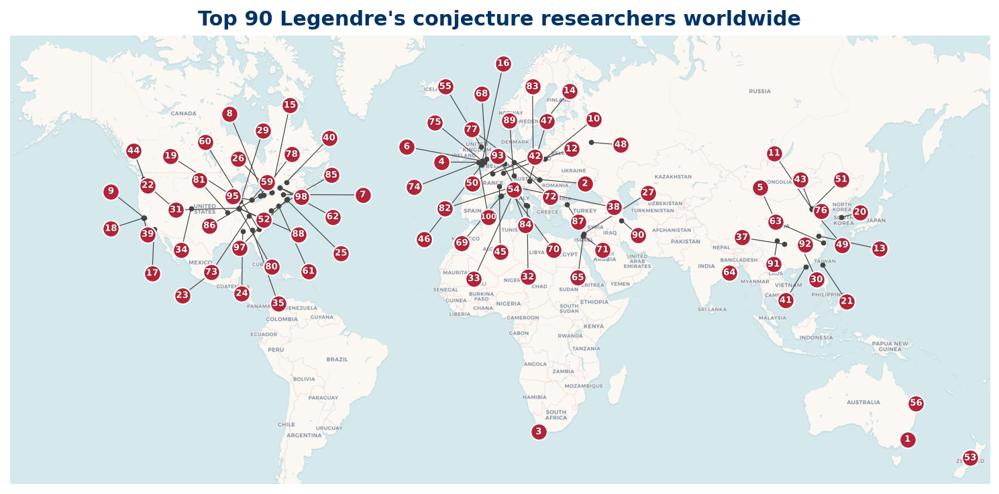

Who's Who in Legendre Conjecture Research
A directory of researchers working on Legendre's conjecture
Legendre's conjecture asks whether a prime number always exists between n2 and (n + 1)2 for every positive integer n. First raised by Adrien-Marie Legendre in the early nineteenth century, it appears alongside three similarly simple-to-state but deeply resistant prime problems in David Hilbert's 1900 list and David Hilbert's student Edmund Landau's 1912 ICM address at Cambridge, where Landau called it one of four problems on the distribution of primes that are "unattackable at the present state of science."
The conjecture remains open. The best-published unconditional result is due to Roger Baker, Glyn Harman, and Janos Pintz (2001), who showed that for all sufficiently large x, the interval [x, x + x0.525] always contains a prime. Because the length of the interval (n+1)2 − n2 = 2n + 1 grows like √x, a proof of Legendre's conjecture would require an exponent of 1/2 rather than 0.525.
Progress on Legendre's conjecture lives inside the broader program of distributing primes in short intervals, capturing work from Hoheisel (1930) and Ingham (1937) through Huxley (1972) and the landmark 2005 theorem of Goldston, Pintz, and Yildirim on small gaps between primes. This site ranks the researchers who have contributed most to that program, combining evidence from arXiv preprints, OpenAlex citations, and zbMATH Mathematics Subject Classification 11N05 (distribution and density of primes) and 11N36 (applications of sieves).
How the list is built
Three independent signals are combined into one composite ranking:
- arXiv preprint output, filtered to math.NT and math.CO categories, matched against 13 search terms.
- OpenAlex topical citations.
- zbMATH Open, using the MSC subject classes (11N05, 11N36).
The three pipeline ranks are combined with a weighted order statistic: for each researcher the three ranks are sorted and weighted 70% on the best, 20% on the middle, and 10% on the worst. Lower is better. See the methodology for details.
Top 100 at a glance
100 researchers, drawn from 23 countries.
| Country | Top 100 researchers |
|---|---|
| US | 25 |
| CN | 12 |
| GB | 9 |
| CA | 8 |
| IT | 7 |
| FR | 5 |
| DE | 3 |
| IL | 3 |
| AU | 2 |
| HU | 2 |
| PL | 2 |
| AT | 1 |
| FI | 1 |
| HK | 1 |
| IN | 1 |
| IR | 1 |
| KR | 1 |
| MX | 1 |
| NZ | 1 |
| RU | 1 |
| TR | 1 |
| TW | 1 |
| ZA | 1 |
| Unknown | 10 |

Where to start
- The Top 100 is the canonical ranked list, sortable in your browser.
- Regional listings: North America, Europe, Asia & Pacific, Other regions.
- Reading list: short papers from 2018 onward, with clickable links.
- Data: the ranked list as an open CC-BY dataset, with a citable DOI.
- Methodology: how the data is built, audit decisions, and limitations.
Citing this site
Hubbard, S. (2026). Who's Who in Legendre Conjecture Research. Zenodo. https://doi.org/10.5281/zenodo.20674899